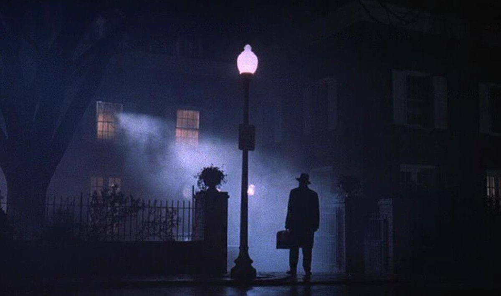
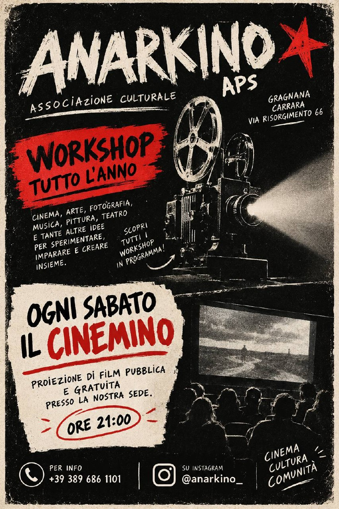
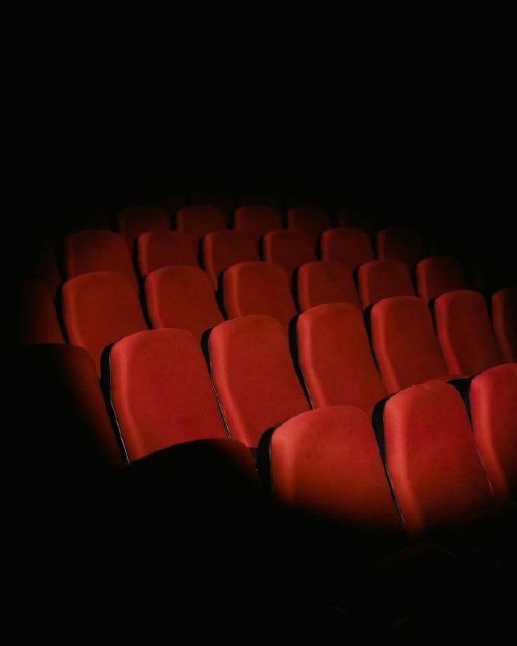
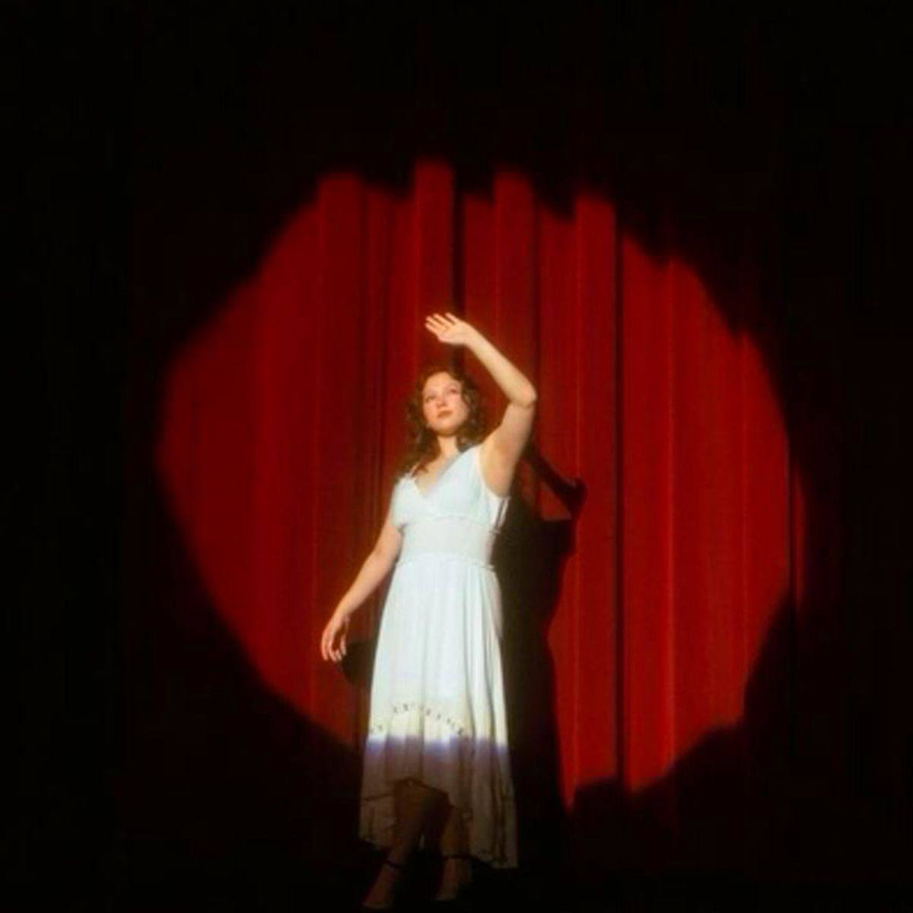

01
Workshop Horror
Atmosfere, paura e costruzione dell'immaginario horror.
Associazione culturale · Gragnana, Carrara
Cinema, documentari, laboratori e incontri per stare insieme, guardare il mondo e raccontarlo.
Scopri il Cinemino ↓Ogni sabato · ore 21

Un film, una stanza, molte voci.
Ogni sabato apriamo la nostra sede per una proiezione pubblica gratuita. Un appuntamento per incontrarsi, vedere cinema e lasciare che nasca una conversazione.
Fare per imparare
La sede di Anarkino è anche un laboratorio: uno spazio aperto a chi vuole provare, studiare e creare insieme.

Atmosfere, paura e costruzione dell'immaginario horror.

I primi strumenti per raccontare una storia attraverso le immagini.

Corpo, voce e presenza scenica per stare dentro una storia.
Il nostro sguardo
Documentari e produzioni cinematografiche nati dall'urgenza di osservare, ascoltare e raccontare.
Le immagini e i titoli qui sopra sono pronti per essere sostituiti con i vostri lavori reali.
Una rete che cresce
Passa a trovarci
Anarkino vive a Gragnana, in via Risorgimento 66. Qui potrai trovare i contatti per il Cinemino, i workshop e le collaborazioni.
Contatti ↓